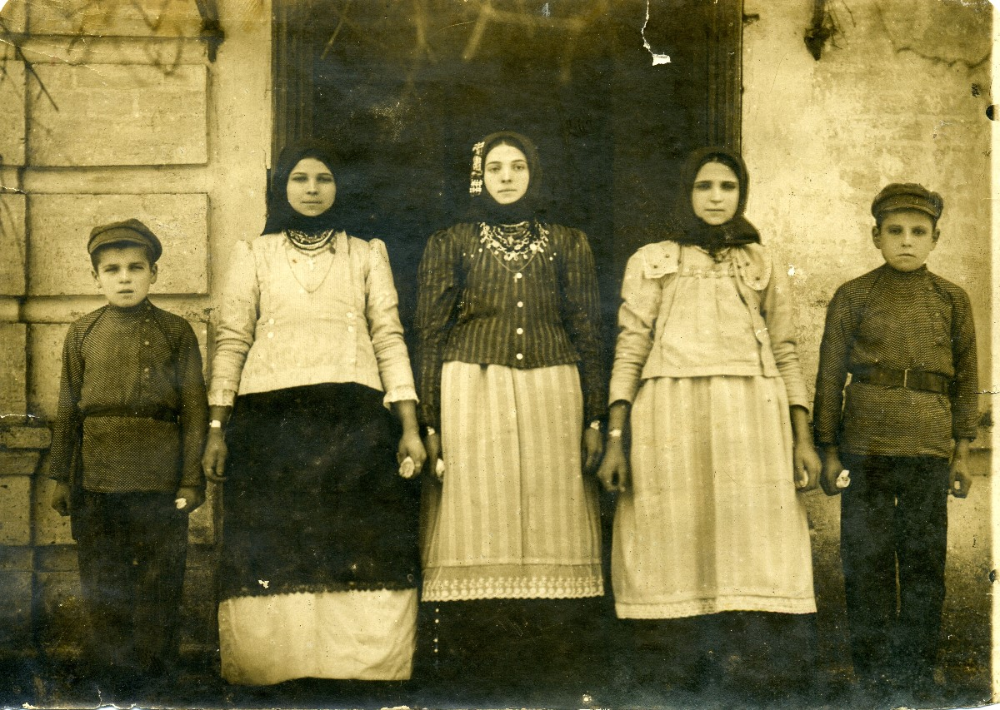

Сербинов Иван Степанович
Родился: 28.01.1915, с. Зеленое (с. Зеленовка)
Умер: 24.06.1963, с. Зеленое (с. Зеленовка)
Род: Сербиновы
Продолжительность жизни: 48
Место жительства: с. Зеленое (с. Зеленовка)
Жили они очень бедно, по рассказам сына, Анатолия Ивановича, в землянке. По молодости отсидел 3 года за то что воровали зерно, и потом, у него была приобретенная эпилепсия
Отец: Сербинов Степан Федорович
Мать: Сербинова (Ковачева) Анастасия Михайловна
Сестра: Сербинова Мария Степановна
Брат: Сербинов Георгий Степанович
Сестра: Станчевская (Сербинова) Доминикия Степановна
Сестра: Турлакова (Сербинова) Акулина Степановна
Брат: Сербинов Василий Степанович
Брат: Сербинов Александр Степанович
Сестра: Мокина (Сербинова) Елена Степановна
Брат: Сербинов Федор Степанович
Брат: Сербинов Георгий Степанович
Сестра: (Сербинова) Мария Степановна
Сестра: Салтовская (Сербинова) Анна Степановна
Жена: Сербинова (Донева) Анна Захаровна
Сын: Сербинов Степан Иванович
Сын: Сербинов Григорий Иванович
Сын: Сербинов Анатолий Иванович
Дочь: Киян (Сербинова) Мария Ивановна
Сын: Сербинов Николай Иванович
Дочь: Сербинова Евдокия Ивановна
дети Степана Федоровича Сербинова: около 1925, с. Зеленое (с. Зеленовка).  Баба Настя приехала на родину: около 1956, с. Зеленое (с. Зеленовка). Зеленовка 1956 Баба Настя приехала на родину: около 1956, с. Зеленое (с. Зеленовка). Зеленовка 1956 Первый слева - Анатолий Иванович, сидят первый слева Иван Степанович, третий - муж Домникии Иван, баба Настя и Домникия. Стоят: первая слева - невестка Домникии, жена её сына Карпа Ивановича, Мария Степановна, а третья - Анна Захаровна рядом с Иваном Степановичем лежит сын Домникии, Николай, а над ними слева её же дочь Валентина и сестра Анатолия Ивановича, Евдокия. |